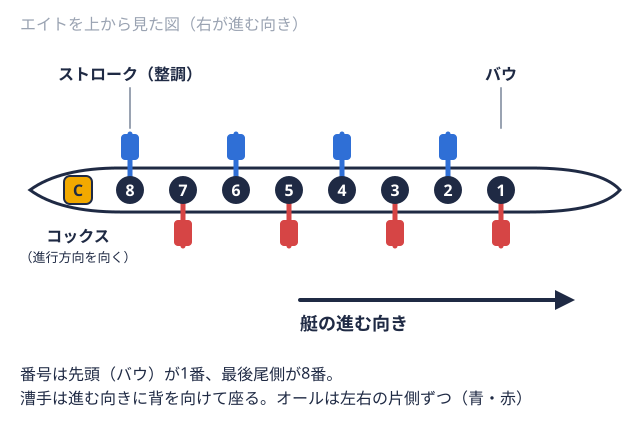
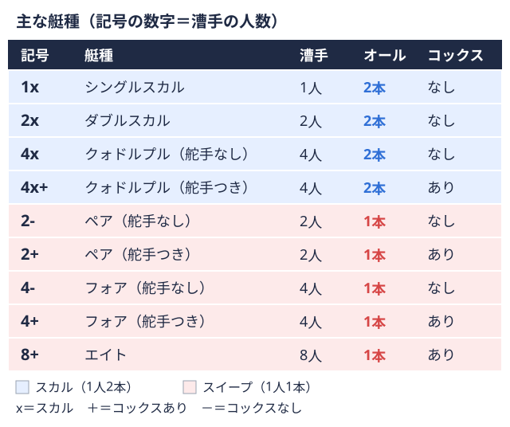

就活・キャリア 2026-11-10
大学ボート部（漕艇部）出身者の志望動機の書き方｜競技経験をどう企業選びの理由につなげるか
就職活動のエントリーシート（ES）や面接で必ず聞かれるのが「志望動機」です。大学ボート部（漕艇部）の部員からは、「ガクチカや自己PRではボートの話を書けても、志望動機になると競技経験とどうつなげればいいか分からない」という声を聞くことがあります。志望動機は本来、競技の話そのものではなく「なぜこの会社なのか」を伝える項目ですが、書き方を工夫すれば、ボート部での経験を企業選びの理由に無理なく結びつけることができます。本記事では、志望動機の基本構成を踏まえたうえで、ボート部出身者ならではの組み立て方を整理します。
志望動機とガクチカ・自己PRの違い
聞かれていることの違い
就活のES・面接では、「志望動機」「自己PR」「ガクチカ」がそれぞれ別の項目として問われますが、この3つは問われている内容が異なります。自己PRは「自分の強み・人柄」そのものを、ガクチカは「学生時代にどう取り組んだかという過程」を問う項目であるのに対し、志望動機は「数ある企業の中で、なぜその会社を選ぶのか」という企業選びの理由そのものを問う項目です。同じボート部での経験を題材にする場合でも、志望動機では競技経験を主役にせず、あくまで企業選びの理由を補強する材料として使う、という位置づけの違いを意識しておく必要があります。
3項目を同じエピソードで埋めない
ES全体で自己PR・ガクチカ・志望動機を同時に求められることも多くありますが、同じボートのエピソードを3項目でそのまま繰り返すと、読み手には同じ内容の言い換えにしか見えません。例えば、ガクチカでは「クルー1つの艇に乗る全員のまとまり。レースに出る単位にもなる。の目標タイム達成に向けた練習改善」という取り組み自体を、自己PRでは「その過程で発揮した自分の強み」を、志望動機では「その経験から見えてきた、仕事選びで大事にしたい軸」を扱うなど、同じ競技経験からでも項目ごとに異なる角度を切り出す意識を持つと、ES全体の情報量が増えます。
志望動機の基本構成
志望動機には一般的に次のような構成の型があります。
- 結論：その会社を志望する理由を一文で示す
- きっかけ・背景：その企業や業界に興味を持ったきっかけ
- 企業の魅力への共感：企業研究を踏まえた、その会社ならではの魅力
- 入社後の貢献・実現したいこと：自分の経験や強みをどう活かしたいか
この型で重要なのは、4の「貢献・実現したいこと」の部分を、他の企業にも当てはまるような一般的な内容ではなく、その企業でなければ成り立たない内容にすることです。ボート部での経験を使うのは、主にこの4の部分です。「競技で培った力を、御社のこの業務でこう活かしたい」という形で接続すると、競技経験と企業選びの理由が自然につながります。
ボート部の経験を志望動機にどう活かすか
「競技の説明」に字数を使いすぎない
ボート部出身者の志望動機でよくある書き方の失敗は、志望理由を書く前に競技やレースの説明に多くの字数を使ってしまうことです。ボートはルールや種目を知らない読み手も多い競技のため、説明したくなる気持ちは自然ですが、志望動機で問われているのは企業選びの理由であり、競技の解説ではありません。競技説明は最小限にとどめ、「競技を通じて得た力」と「その力を活かしたい企業の業務」を結びつける部分に字数を割く方が、読み手に伝わりやすくなります。
未経験からの成長過程を、業界選びの軸につなげる
大学からボートを始める部員が多いという競技特性は、ガクチカだけでなく志望動機でも活かせる材料です。例えば、「未経験の状態から基礎を積み重ねて結果を出す過程に面白さを感じた」という経験を、「経験の有無に関わらず成長できる環境で働きたい」という企業選びの軸につなげる、といった形です。競技力や戦績そのものを強調するよりも、取り組みの過程で何を大事にしてきたかを、企業選びで重視する点と結びつける方が、説得力のある動機になります。
クルー競技での役割を、仕事の進め方と結びつける
エイト漕ぐ人8人と舵を取る人1人が乗る最大級の艇。1人1本のオールを持つ。  
業界・企業ごとに書き分ける
志望動機でもっとも避けたいのは、どの企業にも当てはまる内容になってしまうことです。「体力があります」「チームワークを大切にします」といった抽象的な表現だけでは、他の体育会学生のESと差がつきません。志望する企業の事業内容や職種を調べたうえで、「この会社のこの業務だからこそ、ボート部で培ったこの経験が活きる」という形で、企業ごとに結びつけ方を変える必要があります。複数の業界を受ける場合は、同じボートの経験から、業界ごとに異なる側面を切り出して志望動機に落とし込む準備をしておくと、企業研究との整合性が取れた内容になります。
面接で深掘りされたときの受け答え
志望動機はES提出後、面接で「他の企業ではなくなぜこの会社なのか」「競技経験とこの仕事のつながりをもう少し詳しく」と深掘りされやすい項目です。あらかじめ、志望動機に書いた内容について「なぜそう思ったのか」を複数回自問しておくと、想定していない角度から質問されても答えやすくなります。また、自分の代やクルーが大会でどのような立ち位置にあったかを事実として整理しておきたい場合は、早稲田大学ボート部のインカレ全記録や慶應義塾大学ボート部のインカレ全記録のような大学別の年度別成績ページ、また2025年度 全日本大学ローイング選手権の結果のような年度別ページで、所属校や所属クルーの記録を振り返っておくと、面接での深掘りに事実を交えて答えやすくなります。
競技と就職活動の両立に不安がある場合は、体育会所属の学生に特化した就活支援サービスを利用するのも一つの方法です。体育会学生向けの就活支援サービス「ツナカレ」では、体育会経験者の事情を踏まえた就活サポートが提供されています。
まとめ
大学ボート部（漕艇部）出身者の志望動機は、「結論→きっかけ・背景→企業の魅力への共感→入社後の貢献」という基本の型を踏まえたうえで、競技経験そのものを主役にせず、企業選びの理由を補強する材料として使うことが大切です。未経験からの成長過程やクルーでの役割を、志望する企業の事業・業務と具体的に結びつけ、企業ごとに書き分けることで、他の学生と差がつく説得力のある内容になります。
出典
志望動機の基本的な構成・書き方に関する記述は、就職支援サービスが公開する一般的な就活ノウハウ（キャリタス就活、ONE CAREER）を参考にした一般的な傾向であり、特定の企業・個人の選考結果を示すものではありません。体育会出身者の志望動機における注意点は、北海道新聞の報道記事を参考にしています。本記事の大会概要は、公益社団法人日本ローイング協会（JARA）公式サイト（大会情報）の公表内容を参照しました。選手個人の氏名は掲載していません。最新の大会情報は日本ローイング協会公式サイトをご確認ください。
ボート部の「ガクチカ」、書き方に迷ったら
オフシーズン・引退後に、長期インターンという選択
部活で培った力を実務で試す。16タイプ診断（30秒）で合う企業がわかります。